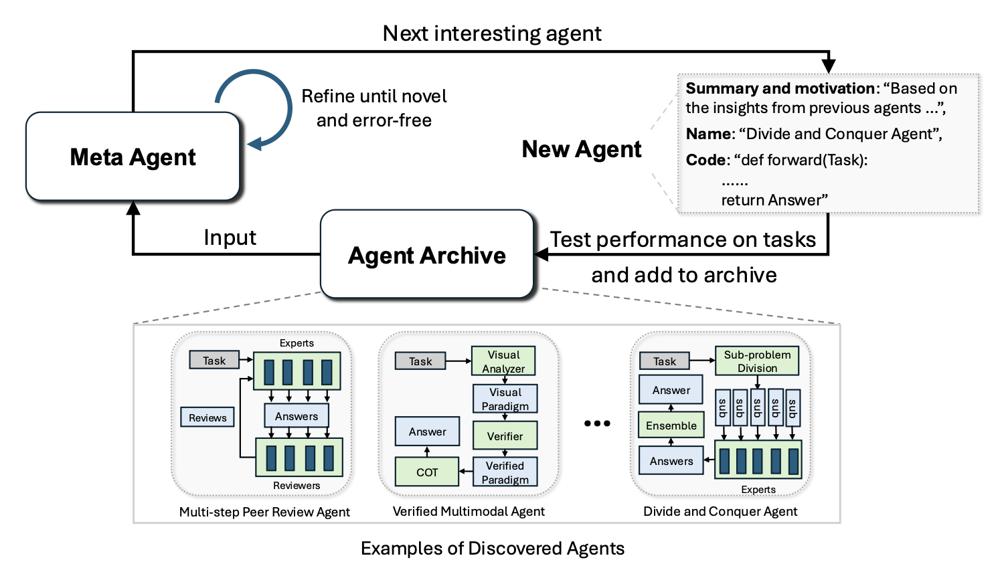
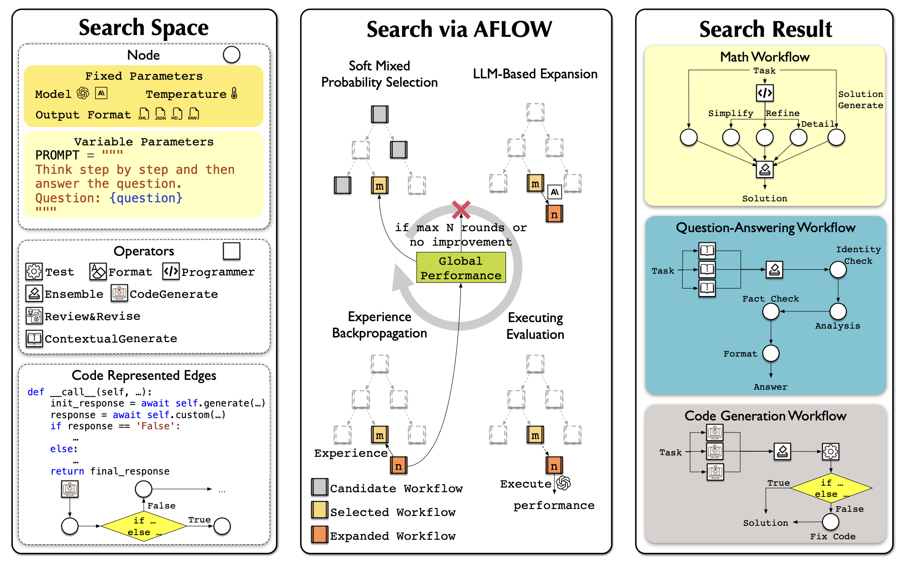
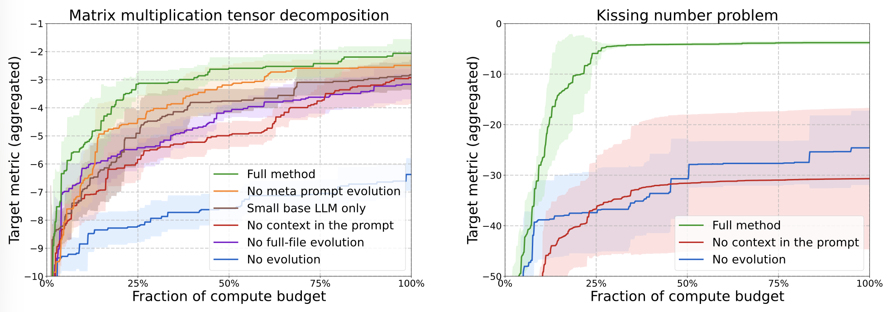

递归自我改进（RSI） 可追溯至 I. J. Good（1965）：他将"超智能机器"定义为能在所有智力活动上超越人类、并设计更好的机器来改进自身的系统。
"AI uses its current intelligence to improve the cognitive machinery that produces its intelligence."
— Yudkowsky (2008)
在现代 AI 中，RSI 反馈回路意味着：模型改进训练流水线与部署系统 ，使后继模型在具有经济价值的任务上获得更好表现。
→
Harness 层
工具、规划、上下文、持久状态
→
部署系统
Claude Code、Codex 等成功产品
→
RSI 循环
更好的后继模型 + 更好的 Harness
Harness 是环绕基础模型的系统，它编排执行，并决定模型如何思考与规划、调用工具与行动、感知与管理上下文、存储产物，以及评估结果。
原始模型与真实世界上下文之间的这一层，与模型的原始智能同样重要。
图 1 · Agent Tool Use 循环：User Input → Model Inference → Agent Response / Tool Calls → 反馈循环
与早期 agent 框架对比——"agent = LLM + memory + tools + planning + action" ——harness engineering 还额外包含：
🔀 Loop Engineering
工作流设计：计划→执行→观察/测试→改进→再次执行
📐 评估系统
结构化评测基准，量化 Agent 在任务上的表现
🔐 权限控制
Agent 能访问哪些工具、文件、网络资源的控制层
💾 持久状态管理
文件存储而非上下文塞入，长期运行的关键
与 OS（操作系统）类比：Harness 应封装复杂逻辑，同时保持接口简单。配置、工具接口与其他协议可能逐渐在全行业标准化。
图 2 · 简化的 Codex Agent 开发循环：Observe repo → Plan → Search/read files → Edit/write patches → Run tests → Inspect errors → 循环
🧠 观察与推理
Agent runtime 编排模型如何分析轨迹与失败案例，持续迭代
🔧 工具调用
Bash、Read、Write、Edit、Glob、Grep、TodoWrite 等标准工具集
🧵 并行子 Agent
启动并行任务、检查日志、取消失败运行、合并结果到主线程
💾 持久记忆
文件存储实验日志、代码 diff、论文摘要、错误 trace 等产物
🔄 上下文管理
结构化上下文而非追加上下文，避免上下文窗口溢出
📊 评估与反馈
评分函数 + 参考解 + 回归测试 + 产物收集
"关键设计选择是让并行性变得显式且可检查。如果子 Agent 的输出只存在于临时聊天上下文中，它们很快就会过时并被隐藏起来。"
— Lilian Weng
1
ACE · Agentic Context Engineering
把上下文看作演化中的 playbook，而非越来越长的提示词。策展器输出结构化 bullet points（ID + 描述），通过确定性逻辑合并进上下文日志。避免上下文坍塌和简短偏差。
2
MCE · Meta Context Engineering
双层优化：元层（Meta-agent）演化技能 s ∈ S，基础层（Base-agent）优化上下文函数 c = F(x; ρ)。技能数据库追踪历史，跨代交叉生成新技能。
3
Meta-Harness · Lee et al. 2026
被优化对象是决定"哪些信息应被存储、检索并呈现给模型"的代码。Proposer（编码 Agent）生成新的 harness 候选，输出位于 Pareto 前沿上的最优解。
图 3 · ACE 框架：Generator → Reflector → Curator → Delta Context Items → 更新 Context Playbook
图 4 · MCE 框架：Meta 层技能演化（元优化）+ Base 层上下文优化 → 双层协同训练
🧪 AI Scientist
Lu et al. 2026 · 提出想法→写代码→运行实验→分析结果→写论文→同行评审
🔍 ScientistOne
Meng et al. 2026 · 可验证性为核心约束：每个 claim 追溯到证据来源
🤖 Autodata Agent
Kulikov et al. 2026 · 挑战者+弱求解器+强求解器+验证器，合成"恰到好处"难度数据
🎯 ADAS
Hu et al. 2025 · 元 Agent 提出新的 Agentic 工作流设计 → 搜索最优解
图 5 · AI Scientist 流水线：Ideation → Experimentation → Write-up，三阶段自动化研究循环
图 6 · Autodata Agent：Main Agent + Challenger LLM + Reward Model（强求解器/弱求解器/验证器）
图 7 · ADAS：Meta Agent → New Agent → Agent Archive → 递归发现新 Agent
Self-Taught Optimizer (STOP) ：改进器改进自身。在 t 时刻，种子改进器 I₀ 接收初始解 s、效用函数 u 和黑盒语言模型 M，返回改进后的解 s'。元效用衡量改进器在下游任务上的平均表现。

图 8 · AFlow 搜索空间：Node（Prompt）× Operator（Test/Format/Programmer...）× Edge（代码逻辑），通过 MCTS 迭代优化工作流
图 9 · AFlow vs 主流方法对比（HotpotQA / DROP / HumanEval / MBPP / GSM8K / MATH）：OURS(AFlow) 平均 80.3，超越所有基线
Meta-Harness 的优化对象是决定"哪些信息应被存储、检索并呈现给模型"的代码。Proposer 是一个编码 Agent，输出位于 Pareto 前沿上的 harness 候选集。
图 10 · Meta-Harness 伪代码：H（初始 harness population）→ 评估 → Proposer → 候选验证 → Pareto 前沿输出

图 11 · Meta-Harness 在 TerminalBench-2 上：搜索进度（左）从 32% 提升至 57%；最终对比（右）以 37.6% 超越 Claude Code（27.5%）和 Terminus-2（28.3%）
"一旦 harness 设计变成可执行搜索空间，强大的编码 Agent 就能利用人类工程师所使用的同一设计空间。"
— Lilian Weng
SWE-bench / CatWalk
开源软件工程任务评测。CatWalk 提供标准化执行环境和解析器。
AgentEval
OpenAI 评估 Agent 在自定义任务上的表现，追踪评测指标。
PaperBench / JudgeEval
评估 AI 复现 AI 研究的能力。包含 Code-Dev 轻量版本。
CORE-Bench
270 个任务，基于 90 篇论文，评估计算可复现性。最佳 Agent 仅达 21%。
RE-Bench
7 个真实 ML 研究工程环境。人类专家 8h 达 82% 非零分，Agent 在 2h 内以 4× 超越。
MLE-bench
75 个 Kaggle 竞赛。o1-preview + AIDE 在 16.9% 竞赛达到铜牌。
RSI 近期不太可能从模型直接重写自己的权重开始。实用路径是：
"Harness 就是代码，它规定提示词、工具调用、子 Agent、控制流、记忆和工作流逻辑如何协同工作。如果 LLM 能优化执行 Agent 的代码，它就能访问一个比手写提示词大得多的设计空间。"
— Lilian Weng · 核心洞见
许多 harness 改进可能会被内化进核心模型行为中，但它与外部上下文和工具之间的接口仍然应当保留——指令微调的历史已经证明过这一点。
图 12 · Self-Harness 循环：Current Harness $h_t$ → Weakness Mining → Harness Proposal → Proposal Validation → Updated Harness $h_{t+1}$
图 13 · AlphaEvolve 架构：Scientist/Engineer 配置 → AlphaEvolve（Prompt Sampler + LLMs + Evaluators + Program DB）→ 迭代演化 → Best Program
图 14 · AlphaEvolve Ablation：Full method vs 各 ablated 版本（Matrix multiplication / Kissing number）

图 15 · SIA（Self Improving AI）：Feedback-Agent 同时控制 Harness 更新（prompts·tools·retries）和 Weight 更新（LoRA+RL），形成统一改进循环
图 16 · STOP 算法：改进器改进自身（$I_t \leftarrow I_{t-1}(\hat{u}, I_{t-1}, L)$），通过元效用 $\tilde{u}(I)$ 在下游任务上递归优化
图 17 · Agentic 工作流搜索策略：遗传算法 / 分解改进 / Multi-Armed Bandit / 变温探索 / 模拟退火 / Beam Search
"Harness is the system that wraps around the base model. It orchestrates execution and determines how the model thinks & plans, calls tools & acts, perceives & manages context, stores artifacts, and evaluates results."
"Harness engineering is no longer just prompt templates — it is closer to runtime and software system design."
"Once harness design becomes an executable search space, a capable coding agent can leverage the same design space that human engineers use."
"Harness is code. It defines how prompts, tool calls, sub-agents, control flow, memory, and workflow logic work together. If an LLM can optimize the code of the agent it executes, it gains access to a design space far larger than hand-written prompts."
"As models become smarter, we move toward more complex objectives and more general methods. Many harness improvements will likely get internalized into core model behavior — but the interface to external context and tools should be preserved."
本文基于 Lilian Weng（OpenAI）2026-07-04 发布的博客文章全译整理
· 参考 35 篇论文 · 涵盖 ACE / MCE / Meta-Harness / AI Scientist / STOP 等核心工作